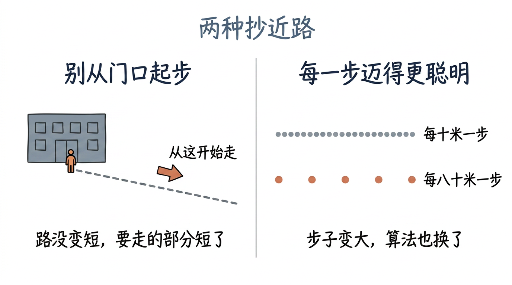
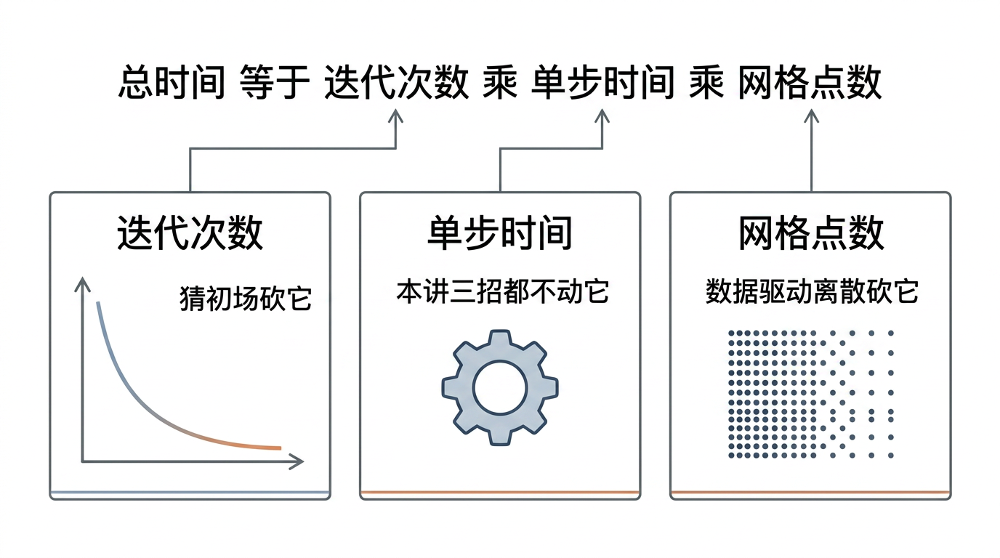
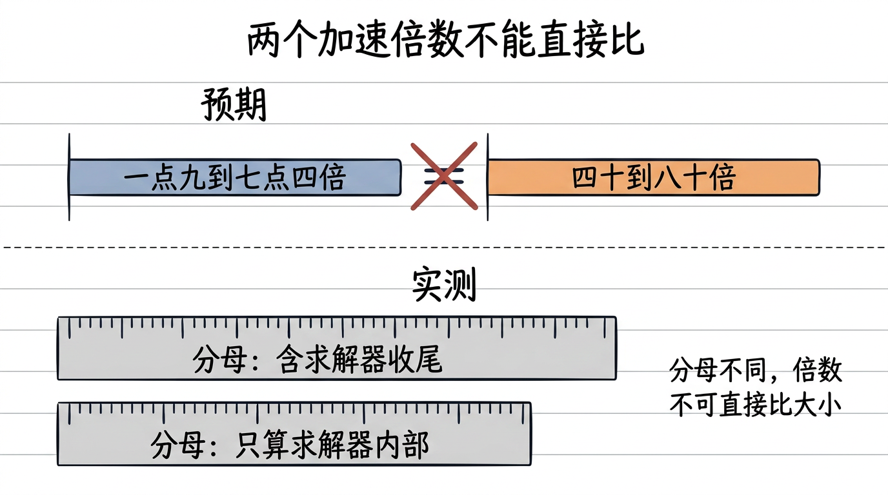
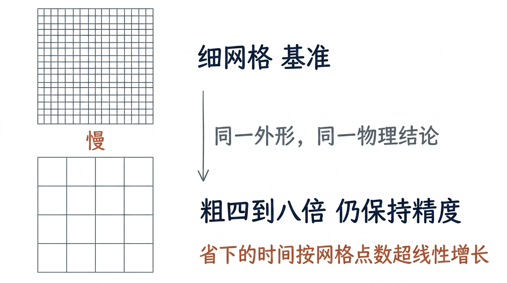
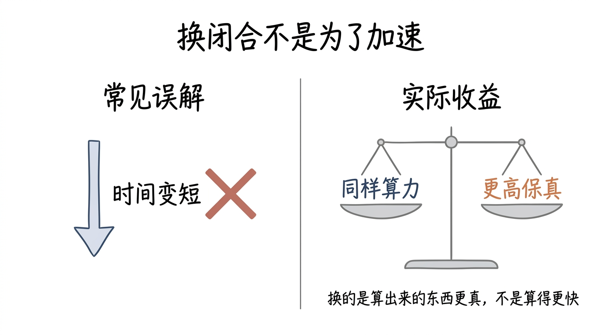
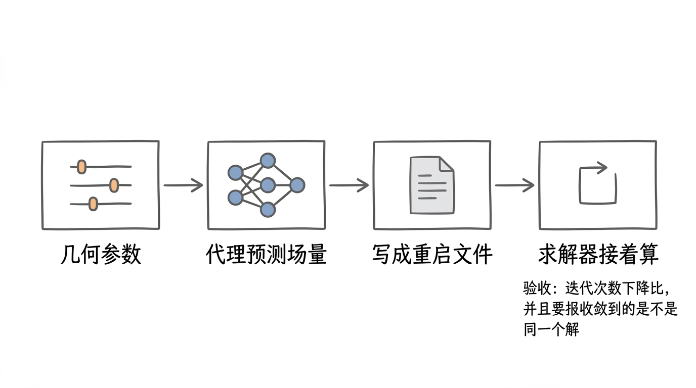
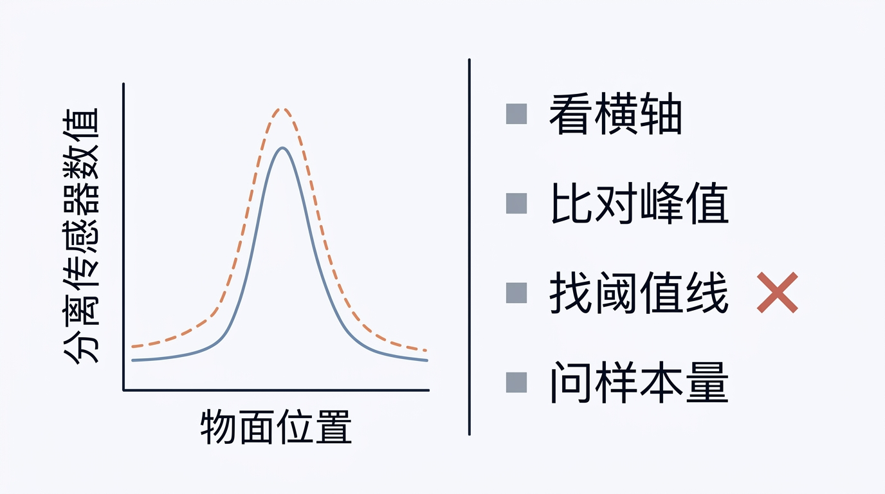
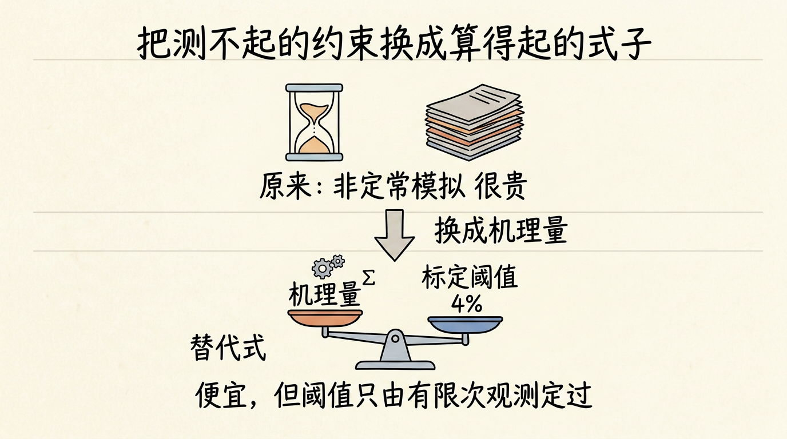
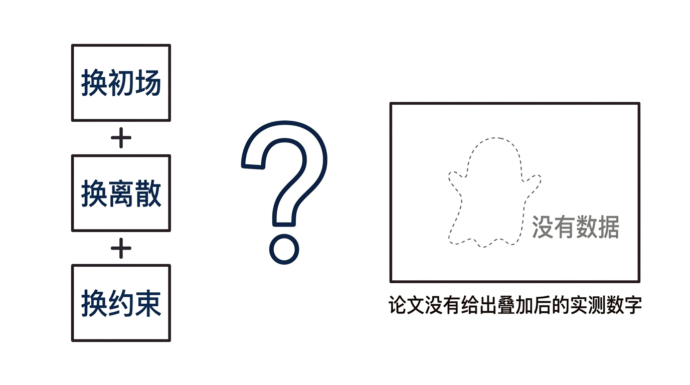
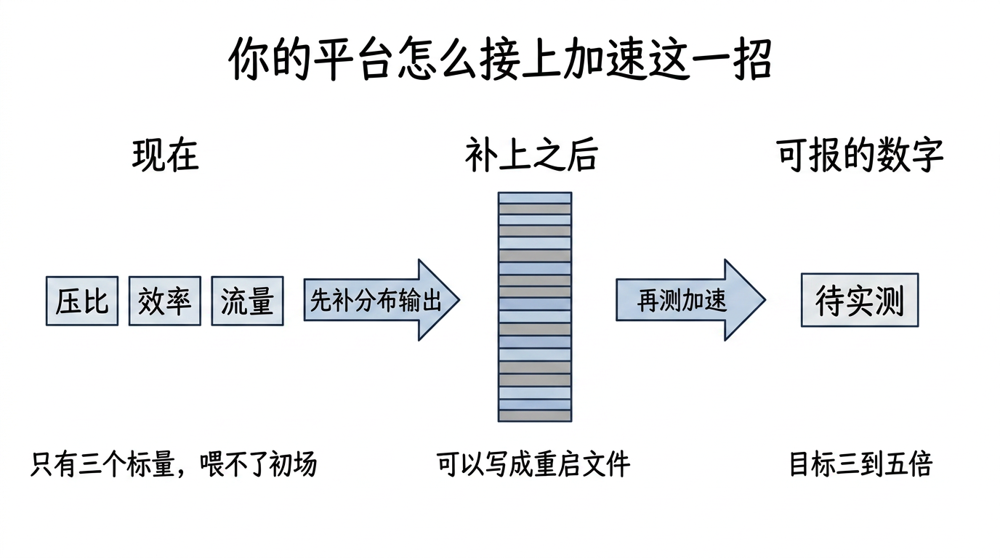

逐张看文字是否清晰不糊、中文是否有错字、结构是否与正文一致。发现问题的图，把 文件名 报给我，我单独重画。
（自检脚本无视觉能力，本页只能由人眼完成。）
| # | 图 | 位置 / 应表达的意思 |
|---|---|---|
| 1 |  | §3 场景引子 两种抄近路：别从门口起步（少走几步）vs 每一步迈得更聪明（改走路的方法） L08v2_s1_two_shortcuts_zh.png |
| 2 |  | §5(a) 成本式三因子：迭代次数 / 单步时间 / 网格点数，看谁被砍掉 L08v2_s2_three_factors_zh.png |
| 3 |  | §5(c) 👊 预期：两个倍数可直接比；实测：分母不同（含收尾 vs 只算求解器内部） L08v2_s3_speedup_range_zh.png |
| 4 |  | §5(c) 细网格基准 vs 粗 4–8× 网格仍保持精度 L08v2_s3_grid_coarse_zh.png |
| 5 |  | §5(b) 换闭合：同样算力换更高保真，不是算得更快 L08v2_s3_closure_trade_zh.png |
| 6 |  | §6 操作流 SU2 通路：几何参数 → 代理预测场量 → 写重启文件 → 求解器接着算 L08v2_s4_su2_restart_zh.png |
| 7 |  | §7 数据与图表 读图四步：看横轴 / 比对峰值 / 找阈值线（图里没有）/ 问样本量 L08v2_s5_fig45_reading_zh.png |
| 8 |  | §7 换约束：非定常很贵 → 机理量 + 标定阈值 4%（阈值来源薄） L08v2_s5_constraint_swap_zh.png |
| 9 |  | §8 批判 三招能不能叠？论文没给叠加后的实测数字 L08v2_s6_can_stack_zh.png |
| 10 |  | §10 你的项目 先补分布输出，才有初场可喂，再测加速 L08v2_s8_platform_hookup_zh.png |